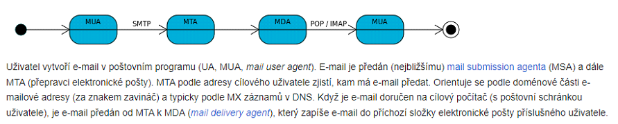

smtp (text protokol), původní standard byl vydán v roce 1982
slouží k doručení, ale je to i přijímací protokol
smtp jako http text plain protokol, config like chat
posílání přes další server, který už má autentifikace
maily proudí nešifrovaný plain text, jediný způsob ho zašifrovat už na začátku
smtp musí řešit antispam či autentifikaci apod.
bud se pripojim na normalni (port, domenu) a pak začnu šifrovat příkazem nebo se můžu připojit na port a začít šifrovat už od začátku např" 993,465
Pokud bychom neresili antispam mohl by nas smtp server dostat black list a neslo by ho jiz na dale pouzivat (pokud by nekdo zneuzil nas server pro spam)
tato rozsireni pro autentifikaci jsou obvykle nazyvana "SMTP AUTH" nebo "ESMTP AUTH" (extended smtp authentification)
domenova autentifikace
SMTP account autentifikace: pomoci napr. api klice
PTR zaznam je kus informace prilozeny k emailove zprave. Ma za ucel overit ze odesilatel se shoduje s ip addressou kterou tvrdi ze pouziva (zkontroluje se ze ip adresa matchuje s domenou kterou pouziva) => 4.123.23.43 => test.com
MTA = mail transport agent komunikuje pomoci smtp napr. postfix (je nazev v informatice pro program zajistujici prepravu eletronicke posty v internetu smtp)
MTA bezi samostatne bez primeho rizeni uzivatelem pocitace (tzv. na pozadi jako demon) na serverrech ( postovnich uzlech). MTA si mezi sebou predavaji e-maily pomoci SMTP protokolu, dokud neni email dorucen do postovni schranky ciloveho uzivatele. Smerovani elektronicke posty je odvozeno od emailove adresy (domenova cast za znakem zavinac) a rizeno tzv. MX zaznamy (mail exchange) v DNS.

zaznam typu MX (cil) rika jake jsou mail servery na DNS -> dává domeny a jejich priority
Protokoly využívají TCP připojení, spadají do aplikační (7.vrstvy) ISO/OSI
pop3 (Post Office Protocol) je starší, mail to stáhne lokálně a ze schránky mizí (vezmu a na serveru to zmizí)
imap (Internet Message Access Protocol) čtu maily na serveru připojím se do schránky a můžu prohlížet schránku, a mail tam zůstávají (existuje i nějaká lokální cache)
Vyhody
Hlavni vyhody jsou spojene s principem synchronizace, ktera umoznuje spravovani zprav v emailovem klientu zrcadlit na server, zatimco protokol POP3 je zalozen predevsim na jednostrannem stahovani neprectenych zprav ze serveru do klienta.
Stale pripojeni
Pokud používáme POP3, klienti se připojí na server pouze na tak dlouho, aby si stáhli novou poštu. Pro použití IMAP4 jsou klienti připojeni tak dlouho, dokud je aktivní uživatelské rozhraní, stahování zpráv je závislé na požadavcích. Pro uživatele s mnoha nebo s velkými e-maily je tento způsob rychlejší.
Vice soucasne pripojenych klientu
Protokol POP3 dovoluje připojení pouze jednoho uživatele ke schránce. IMAP dovoluje současné připojení více uživatelů k jedné schránce, a umožňuje vidět změny provedené ostatními klienty.
Podpora formatu MIME
Téměř všechny e-maily jsou přenášeny ve formátu MIME, což dovoluje zprávám mít stromovou strukturu, kde listové uzly jsou všechny varianty jednotlivých částí obsahu a nelistové uzly jsou varianty více částí. Protokol IMAP4 dovoluje klientům odděleně přijímat jednotlivé MIME části zprávy. Mechanismus umožňuje klientům přijímat textové zprávy, aniž by se zatěžovala linka stahováním přiložených souborů.
Informace o stavu zpravy
Díky použití příznaků definovaných v protokolu IMAP4 si mohou klienti udržovat přehled o stavu zprávy, např. jestli zpráva byla přečtena, bylo na ni odpovězeno, nebo byla smazána. Tyto příznaky jsou uloženy na serveru, takže různí klienti současně přistupující k jedné schránce v různou dobu mohou zjistit změny provedené ostatními klienty. POP3 něco takového nedovoluje, pokud se uživatel připojí dvěma různými klienty, není možnost tyto informace mezi nimi synchronizovat.
Webmailové služby jako je Gmail většinou IMAP podporují.
Prace se slozkami na serveru
IMAP4 klienti mohou vytvářet, přejmenovávat anebo mazat mailové schránky (obvykle uváděné uživateli jako složky) na serveru a přenášet zprávy mezi schránkami. Podpora více schránek dovoluje serverům zpřístupnit sdílené a veřejné složky.
Vyhledani ve zpravach na serveru
IMAP4 poskytuje klientům mechanismus, kterým mohou vyhledávat na serveru zprávy podle různých kritérií. Tento mechanismus dovoluje klientům vyhledávat přímo na serveru, bez nutnosti poštu stáhnout.
Nevyhody
Oproti protokolu POP3 je IMAP4 velmi komplikovaný protokol. Jeho implementace je značně složitější a tedy i náchylnější k chybám než implementace POP3. Navzdory tomu IMAP používá mnoho e-mailových serverů a klientů jako jejich standardní přístupovou metodu. Pokud nejsou ukládací a vyhledávací algoritmy na serveru bezpečně implementovány, prohledávání velké schránky může značně zatěžovat server. IMAP4 klienti mohou způsobit zpoždění při vytváření nových zpráv, u pomalých připojení (např. u mobilních zařízení). U těchto zařízení je lepší použít Push IMAP, což je rozšířený IMAP protokol o implementaci Push e-mail. Nicméně Push IMAP se běžně nepoužívá a v současnosti IETF pracuje na jiném způsobu.
Programs
smtp = postfix, sendmail, microsoft Exchange server